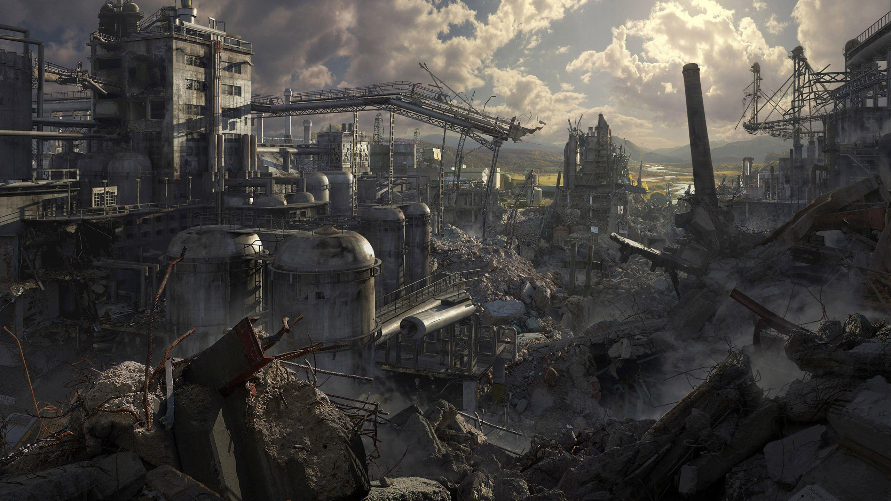

Notes From the Underground:

Link to the book.
Part 1:
Chapter 1:
At first glance, I really don’t know what to make of this author. I can’t trust him. He admitted to lying about being a spiteful official.
His defense: he was lying out of spite.
Perhaps the one true thing that I can pull away from this chapter is that he wants the reader to perceive him as being spiteful. Why? Most likely because he wants to get something off his chest, because he has been hurt and can’t admit that to himself and rather has to live under the illusory veil of his genius.
He finishes the chapter by saying a man takes the most pleasure in talking about himself. I believe that a man takes the most pleasure in talking about his interests. Sure, the argument could be made that a person’s interests are an extension of themselves. But that is a loose argument. I think the author really wants to talk about himself, yet he cannot admit it. He wants to get something off his chest but he still has to hide it behind his ego.
Chapter 2:
He starts off by saying that he “tried to become an insect” but he couldn’t for “being too conscious is an illness”. It sounds to me like he is using the word insect to refer to “normal” people who follow along with the pack and live inside their own bubble of ignorance.
His consciousness makes him aware of all that is sublime and beautiful. It also makes him want to act out in ugly ways, as a sort of defiance? His consciousness of the beautiful drags him into blight. Perhaps because the knowledge of the meaninglessness of life overpowers the joy that beauty brings.
His profound level of consciousness causes him to seek into a world of depravity. If one is to assume that they are responsible for every choice they make, then one is left with indecision. For every choice has benefits and pitfalls. Every choice is a hallmark of your character. For people of “less consciousness” this doesn’t mean much as they are allotted the comfort of not caring or really not being able to care.
He learned to find enjoyment in this. Every choice he would make sends him back into his corner contemplating whether it was the right choice, going over and over every alternative. After a while, he learns to find enjoyment in this hopelessness. In the knowledge that there is nothing more. His action cannot change and even if he were given the option to, he would act the same way again.
This brings forward yet another paradox, where the very reason for him despising life, brings him his only source of enjoyment too. Perhaps this is a commentary on our brain.
Chapter 3:
The underground man is again explaining the burden of his self consciousness. This burden makes him unable to act without remorse, without weighing the pros and the cons. He considers the “less conscious” men as stupid, yet they are real men, while he is nothing more than a mouse.
"To be able to act so callously yet with vigour and passion that can only come from thinking oneself to be absolute, that is a real man."
Is it though? A real man shouldn’t be characterized by his brazen stupidity. Rather, I would view a real man as a man who is able to look past his rage and see something from multiple angles. On top of that I would also say that thinking oneself into despair and into a “mouse hole” is not manly, not even humanly. There is no such thing as manly or womanly, only perceived norms. The underground man needs to start treating himself better and start treating himself.
Chapter 4:
“If he did not find enjoyment in it, he would not moan.”
Perhaps there is some enjoyment to be had from being in pain, it is one of the few circumstances where we are fully aware of our existence and of our mortality. I think what he said about wanting others to know you are in pain is true as well. Or maybe I just share the same twisted thinking he does.
While his explanation was interesting, at the very least. I wouldn’t say it was convincing. If anything, it only made me realize how contemptuous of a person the author is. For he is projecting his own thoughts and insecurities onto those of the reader.
Chapter 5:
He starts by asking if anyone who enjoys their own degradation can have respect for oneself. He also says that he used to feel emotions of penitence, fully aware of the fact that it was all a big lie. A lie that he had constructed in his own head. His reasoning? He did it because life was too boring sitting around and not feeling anything. He convinces himself to be mad, to fall in love, essentially to feel emotion out of boredom.
I realize that perhaps it may seem like this when we think about something, or at least attempt to think about something, to its very core. It may seem like we have certain emotions and feelings for no reason other than to have them. But there are reasons to them, biological and evolutionary reasons.
This is interesting because now it brings into question the distinction between feelings and emotions. Emotions are universal, everyone is capable of them. However, feelings are not. That is scientifically true.
He says that “simple” men are truly capable of action because they lack the consciousness that allows them to believe that there is a true foundation for their feelings.
Chapter 6:
He begins this chapter by exclaiming how if he did not do anything out of pure laziness, at least he would then have one positive quality that he was sure of.
People that are able to convince themselves of a certain existence are very often, much happier. They are capable of living lives full of vigor and passion and they will die with a “triumphant conscience”.
Chapter 7:
The underground man believes that men act, knowingly, against their best interest of being rational simply out of stubborness. We do this because we wish to form our own path, we all desire to not be like everyone else and thus we become like everyone else.
He then claims to know of another “most advantageous advantage” that would shatter all of our logic. It would explain why an enlightened man may act out against his own logic, rather randomly.
The underground man further explains that all this reasoning of what is most advantageous are just simple logical exercises. And we cannot trust our own logic. “...he is ready to deny the evidence of his senses only to justify his logic.” I think what he is saying here is very true. We cannot logically deduce why we do certain things or how we will act for there are many millions of factors that we can’t comprehend. Enter religion and the subconscious?
“Now we do think bloodshed abominable and yet we engage in this abomination, and with more energy than ever. Which is worse?”
I really like this chapter as he is essentially talking about how we delude ourselves into thinking that we are better than our “barbaric” ancestors and that we are continuously becoming more enlightened as time goes on. However, in many cases, this could not be further from the truth. In fact, it seems that we have only become better at convincing ourselves we are becoming better.
The strange advantage mentioned earlier is free will.
Chapter 8:
The underground man claims that if there were some scientific explanation, some mathematical equation that showed there was no such thing as free will. Man would then cease to have desires. Or better yet, they would make the “choice” to not have any desires.
To me, this is a pretty profound statement. Why? Because I believe he is right. If we were told that we lack free will, we would try to revolt in any way we can. It is extremely hard for many of us to be able to live with this idea that we do not have free will. For if that is the case, what is the point of anything?
He continues by saying that in all situations desire gives way to reason. And because we can calculate our choices and reasons, it is only a matter of time before we figure out the explanation of why we reason the way we do. But he disagrees with this statement, as reason only makes half the man. The other half is made up of impulses and irrational desires.
Even if self-proclaimed rational men will act irrational from time to time. Is it not the pursuit of morality and the desire to become more rational that also means something? I think the underground man here is jumping too quickly to a conclusion. Just because you go back on your word does not make it any less. At the end of the day nobody is really perfect.
Chapter 9:
The underground man begins by saying he is joking and proceeds to start talking again about rationality and being “free”. He says that if we want to reform man to act according to science and reason, this might not be a good thing. Why? Because it doesn’t leave any room for creativity.
He says that in order to do this, we must convince ourselves that there is a purpose to “swerving off the road” and onto a different path. We must convince ourselves that we will actually find something with value.
Apart from building, man also loves destroying, seemingly more so than he loves building. Why? Because we can't be idle, we are terrified of being idle.
This chapter brings me back to the myth of sisyphus and how there really is no point to life other than to keep on living. Except the underground man’s take is a little different. He says that we are afraid of this meaninglessness to life, and therefore we content ourselves with surface level knowledge to just get things done.
Chapter 10:
The basic idea of this chapter is to again illustrate the rationality of men. He says that if a man dreams of living in a crystal palace, a giant mansion, he will not be satisfied with anything less.
Even if the man has shelter, everything he lives in will be essentially the same as a hen house until he can live inside of that illusory mansion that he so desires.
He ends the chapter by asking why we were created with such desires. Why do we desire things that are unattainable to us? Why do we desire things that won’t even bring much enjoyment to us in the grand scheme of things?
Chapter 11:
The underground man begins this chapter with another contradiction followed by what he would presume to be the audience's outrage at his lack of consistency.
In the end, he admits that he is only constructing an audience to ease these repressed thoughts out of himself, thoughts that he might not be able to get out otherwise.
Perhaps in the next part we will see a true turn. Perhaps we will see our underground man shed some of his armor and expose himself to his imaginary readers.